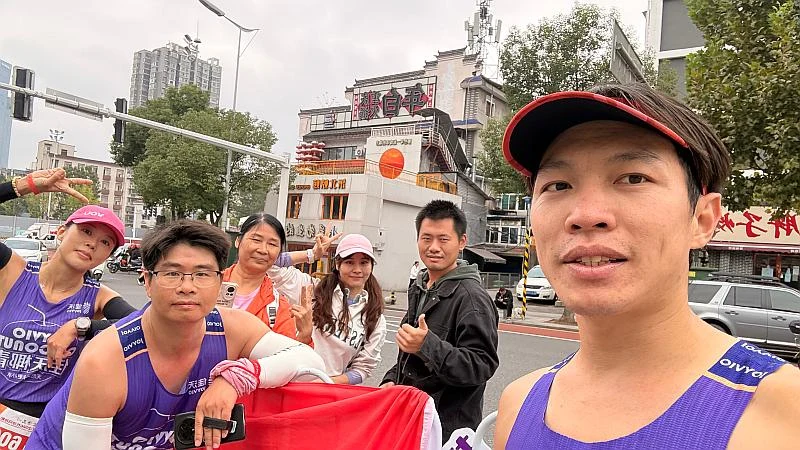
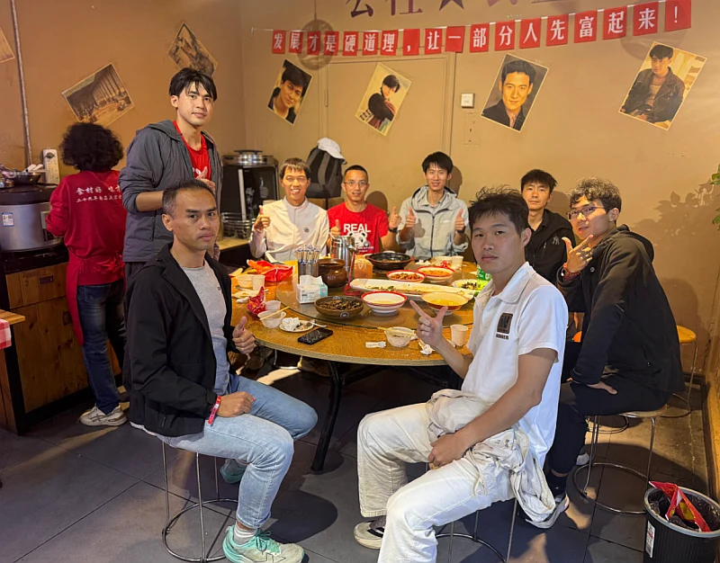
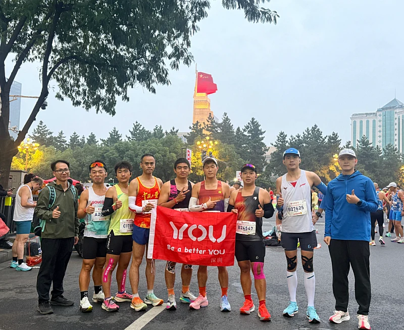

宝体例跑第529期：赛道之外，也有YOU
2026年11月18日，第529期宝体例跑的集合地点仍是宝安体育场主场3号门。临近年底的马拉松赛季，当期帖子把话题从速度延伸到睡眠、饮食与心态，也带回跑友们在长沙和南昌的比赛记录。

一次例跑，接住两座城市的故事
这一期互动吧公布的活动时间为11月18日19:30至21:30。原帖记录，跑友在此前的周日分别参加了长沙和南昌马拉松，回到周三的宝体，赛道上的经历也成了彼此交流的话题。
活动帖关注的不只有成绩：有人突破，也有人以玩赛为主。不同目标的跑者在同一场比赛里留下各自的体验，赛后再聚到一起。
长沙：早餐跑、比赛与等候
长沙马拉松前，YOU跑友一起参加了佳沃水果与YOU跑团的早餐跑。集体热身、环湖跑、合影和早餐，把从深圳出发的跑友重新集合起来。本站另有早餐跑专题，保留了对应的小红书图文。
当期例跑帖还写到，部分跑友留在终点等待同伴。赛道上各自奔跑，赛道外继续照应，异地比赛也有了熟悉队伍的陪伴。

南昌：跑过之后，坐下来聊聊
南昌的参赛跑友也把自己的经历带回了活动帖。原文提到，有人没有达到预期，比赛中也遇到了一些小插曲。这些经历被留作下次准备和交流的话题。
下面两张照片来自原帖的南昌马拉松段落：从赛后的相聚，到举着YOU队旗合影，比赛记录之外也留下了跑友共同出行的日常。


下一次交流，再回到周三
这篇例跑帖把一个问题留给了跑友：马拉松准备除了速度，还包括什么？睡眠、饮食和心态，是原文反复提到的几个方面。大家可以把自己的比赛经历带回团练，继续交流。
本页保留第529期的日期、地点和当期故事。现在参加例跑，可在本站团练介绍中查看签到、共同热身、合照、强度课或慢跑、跑后自我介绍的流程；冬训的距离、配速与休息时间以四组课表为准。